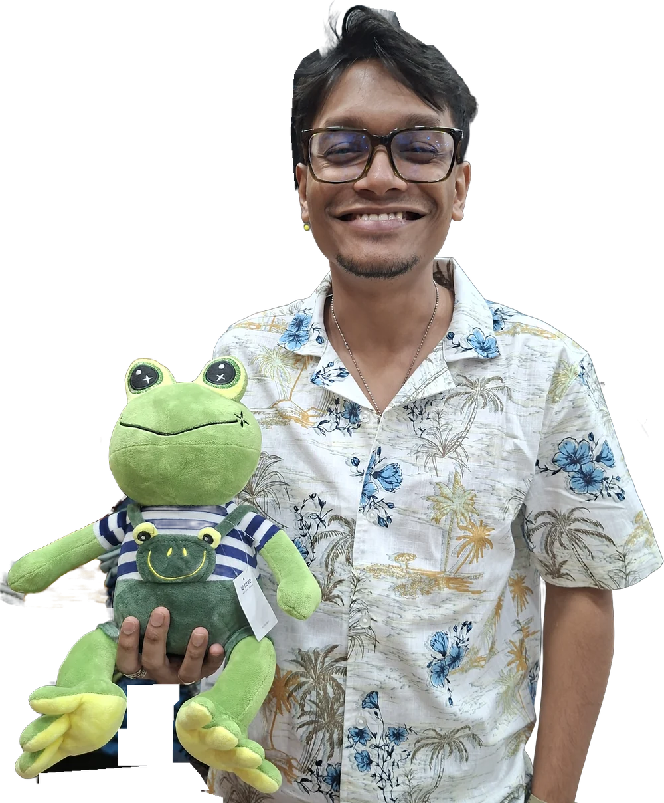
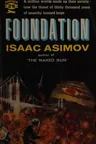
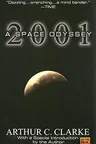
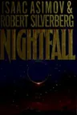
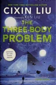
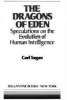
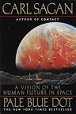
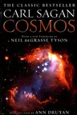
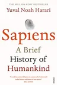

Tally
[released]A pocket notebook for your money. One tap per expense, offline, no sign-up.
- JavaScript
- Java
- Android

guest@iamandelib:~$ whoami
Developer · Instructional designer · Forestry & ecology researcher
Hi, I'm Andelib. I build tools that make the Linux desktop nicer to live in, mostly for KDE Plasma, and privacy-first Android apps that work offline.
I've also spent more than three years turning unstructured documents into organised, easy-to-find learning content, and I'm a forestry graduate whose thesis classified 34 insect species. Based in Sylhet, Bangladesh.
# things I've built and shipped, all open source
7 projects★ 61 GitHub stars↓ 783 downloads
A pocket notebook for your money. One tap per expense, offline, no sign-up.
Hyprland-style dwindle tiling for KDE Plasma 6, as a native KWin script.
Quick Look for Dolphin. Press Meta+Space to preview almost any file.
Unofficial Android music app for the Cyberspace Jukebox, with 8 retro themes.
Windows-style Snap Layouts for KDE Plasma 6. Drag a window up, pick a zone.
Puts your windows back where you left them, per desktop and monitor.
A lean, Linux-only Flatpak video player on VLC 4, wearing Juxtopposed's redesign.
Linux fixes, Flatpak packaging and Plasma theming are listed just below. Everything else lives on github.com/IamAndelib.
Evidence-based fixes for suspend, Bluetooth and Flatpak quirks, plus Flatpak packaging and Plasma theming.
# content & instructional design first, other roles below
Freelance · for Dokeos and others
WriteWow Solutions
Staff Asia
# insects, forests and the numbers behind them
B.Sc. thesis (FES-425) · Department of Forestry & Environmental Science, SUST
I designed and ran a campus-wide survey of three insect orders: seven fixed sites across the 320-acre campus, over three weeks, with twice-weekly sweep-net sampling, specimen preservation and DSLR imaging. Each specimen was classified by family, genus and species, and the orders were compared with the Shannon-Wiener and Simpson diversity indices.
Lepidoptera was the most diverse order; Coleoptera and Odonata were lower. I read the order-level composition for urban biodiversity conservation and presented the findings at the departmental seminar (FES-429), where the oral presentation was graded A+.
Star Tea Estate
Observed plantation operations (pruning, plucking cycles and processing) and documented pest, disease and agrochemical application practices in a plantation cropping system.
# blog posts on dev.to (Linux, fixes, the occasional rant) and a web serial
All posts on dev.to/better_call_sriz →
# grouped by which side of me uses them
# degrees and certificates
Shahjalal University of Science and Technology (SUST)
Department of Forestry and Environmental Science. Provisional certificate issued 13 May 2026.
Relevant coursework
Murari Chand College
# afk: away from keyboard
I play bass, acoustic and electric guitar, and love fingerpicking. Favourite genres: heavy metal, rock, progressive metal, groove metal, Europop and pop.
Bassist (2022–2026), Head of Music School (2022–23) and Assistant Band Leader (2023–2026).
Commended by the 16th Executive Committee for planning, organising and leadership.
Casios, vintage watches and high horology. Always learning how movements work.
Sports and vintage cars. Dream cars: Mk4 Toyota Supra, Porsche 911 and Dodge Viper.
Single-player games. All-time favourite: Max Payne 2. Also GTA, Dead Space, Mass Effect, Call of Duty, Hitman and Tomb Raider.
Sci-fi and found-footage horror.
All-time favourite: George Carlin.
I enjoy constructive debates. They're how I learn and understand other people's perspectives.
I read widely, across all kinds of subjects. Some favourites:

Foundation seriesIsaac Asimov
Space Odyssey seriesArthur C. Clarke
NightfallIsaac Asimov
The Three-Body Problem seriesCixin Liu
The Dragons of EdenCarl Sagan
Pale Blue DotCarl Sagan
CosmosCarl Sagan
SapiensYuval Noah Harari# the fastest way to reach me is email